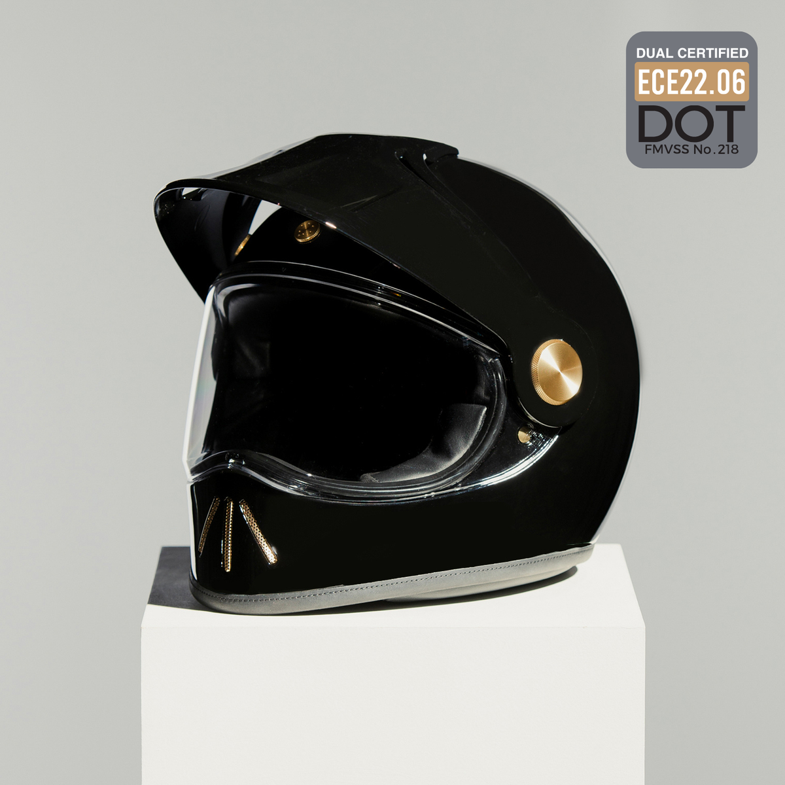

Hedon is a London helmet atelier creating luxury motorcycle helmets that pair considered design with careful handwork. Each piece is shaped and finished by hand, made to be worn, cared for and kept.
Considered detail: a Hedon helmet, visor open.

Inside the atelier: every Hedon helmet is shaped and finished by hand in London.
The Christmas edit
A Hedon helmet is a gift chosen once and kept for years. Considered, personal and quietly exceptional.
Handcrafted in London, with a finish that ages well and stays personal.
Protection that matters: a helmet is the single most important piece of riding kit.
Timeless design that outlasts seasons and trends.
Made to be fitted, worn and cared for, ride after ride.
"Fewer things, made better. A helmet should be the last one you think about, and the first one you reach for."